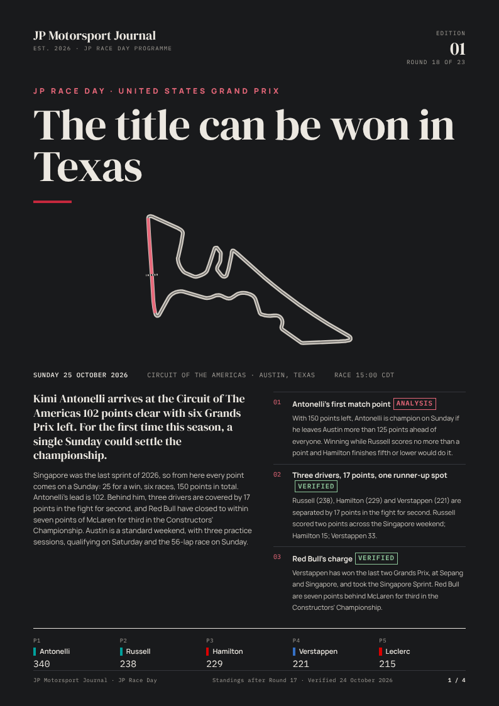

Latest edition · Round 18
United States Grand Prix
Published 24 October 2026File:
A four-page programme for every Grand Prix: the story going in, the circuit, the strategy and a one-page briefing for race day. Free to download and made to print on A4.

File:
The cover. Why this race matters, the three storylines to follow and the top five in the championship going in.
The track map drawn from the official outline, with the Straight Mode zones and the Overtake detection point, plus the key facts and the corners that decide the lap.
What a pit stop really costs under green, a Virtual Safety Car and a Safety Car, then the tyre strategy: the predicted strategies, with pit windows and pace gaps between compounds when they are published.
Lights-out time in local time, the weekend schedule, the official starting grid, the standings, the key battles and five things to watch.
Every figure in the programme carries a label, so you always know where it came from. Each edition lists its sources and the date its facts were last checked. All times are local to the circuit.
Edition 01 is the first JP Race Day Programme. After each race, its programme moves here, so every edition stays available to download.